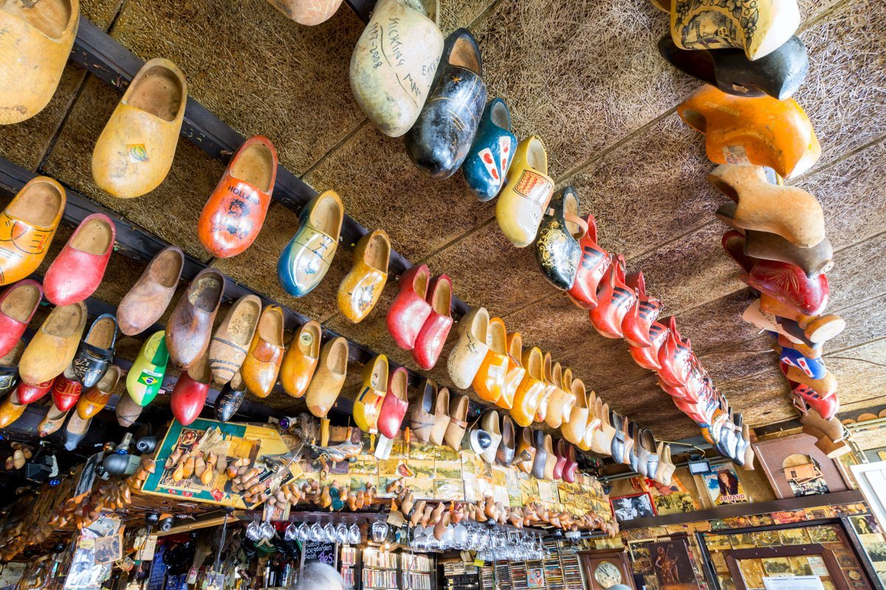
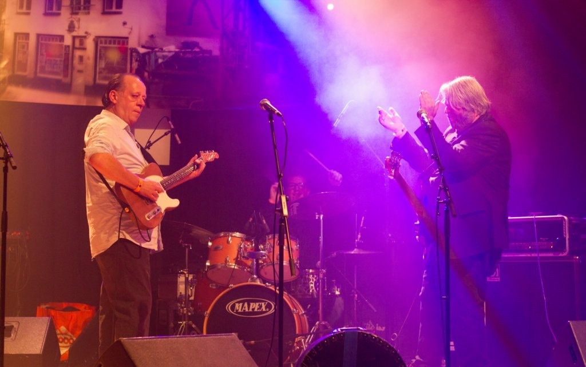
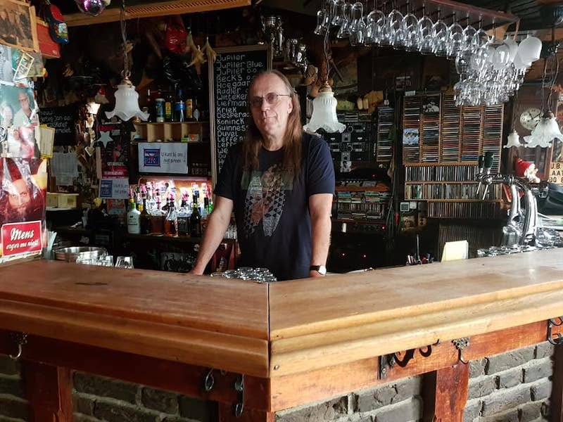
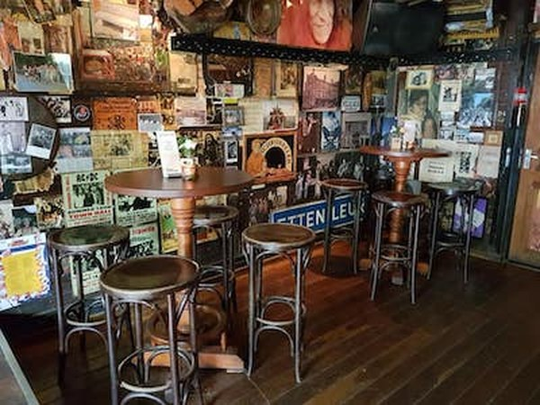
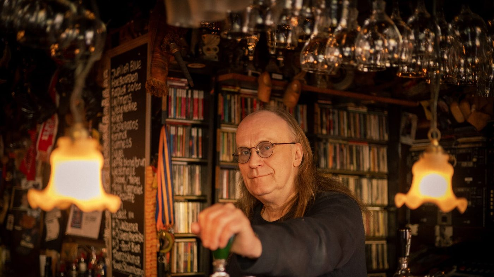

Live muziek in het hart van Etten-Leur
Bruin muziekcafé sinds 1982, aan de Oude Bredaseweg. Elk weekend een band op het podium, en de entree is meestal gratis.
Geweldig naar mijn zin iedere vrijdag. Laat het bier maar vloeien en tot zo!Patrick, in ons gastenboek
Binnenkort in De Klomp
Op zaterdag start de band meestal om 20.30 uur, op zondag om 16.00 uur. Klik op een optreden voor meer info.
De entree is meestal gratis
Verwachten we veel bezoekers, dan is er soms voorverkoop aan de bar. Vol is helaas vol, dus kom op tijd. Het laatste nieuws over optredens staat op onze Facebook.



Een echt bruin muziekcafé
De Klomp zit midden in Etten-Leur, aan de Oude Bredaseweg. Een bruin café met klompen aan het plafond, muren vol foto's en een kast vol cd's achter de bar.
Bijna elk weekend staat er een band. Van blues, soul en rock tot sixties, Nederpop en smartlappen. Gewoon lekker luisteren, meezingen of dansen.
- Elk weekend live muziek
- Entree meestal gratis
- Terras voor de deur
- Geen reservering nodig
Uit ons gastenboek
Hoi Jacques, lekker sfeertje gisterenavond. Top Tent dat Kafeetje van jou! Houwe zo!Flipke Mijzen, Brand New Cadillac
Was super zondag, weer goede herinneringen erbij, hopelijk tot snel.Koos, The Rockshot
Vaste prik in De Klomp
Naast de bands hebben we een paar tradities waar elk jaar weer naar wordt uitgekeken.
Oliebollenbal en Klomp Top 50
Vul aan de bar je Klomp Top 10 in. Op het Oliebollenbal draaien we de Klomp Top 50 van het jaar, met oliebollen en een biertje erbij.
De Klomp Muziekkwis
Test je muziekkennis met je team van maximaal 4 personen. Inschrijven doe je aan de bar.
Jam Session
Neem je instrument mee, of kom gewoon kijken. Backline en drumstel zijn aanwezig.
Bokkentocht
Bier- en spijstocht langs 6 gezellige locaties in Etten-Leur: 6 bockbieren met 6 lekkere hapjes.

Jac van Dongen, waard sinds 1982
“Het gaat om bezieling.”Jac in de Etten-Leurse Bode
Jac opende De Klomp in juni 1982 en staat er nog altijd zelf achter de tap. Het gaat hem niet om het grote geld, maar om iets voor Etten-Leur: muzikanten een podium geven en zorgen dat er in het centrum wat te beleven valt.
Vanuit het café zette Jac in 2003 ook het INDIA Project op. Met donaties en benefietconcerten bouwden we een school voor zo'n 500 kinderen en medische poli's in Rewa.
Kom langs
Reserveren hoeft niet: als er plek is, is er plek.
Café de Klomp
4872 AE Etten-Leur
Openingstijden
Bij optredens en op feestdagen kan dit afwijken. Kijk in het programma.